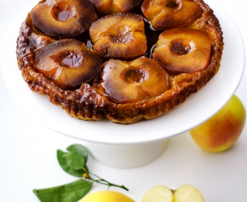
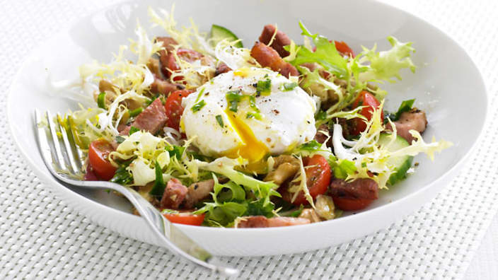

Par ici, Paris là
Tout est dit j'en suis là
Bien loin de mes rêves d'éclat,
J'arpente ton sol, grouillant mais plat
Seul espoir, le soir, dans la rame, sonne le La !
Photos |
Recettes préférées |
|---|---|
|
Comment est votre blanquette ? Blanquette facile |
|
|  |
Tarte Taaaaaaaatin ! Tarte Tatin |
|  |
Salade oui ... Mais Lyonnaise ! Salada Lyonnaise |
Cette page est en cours de developpement.
Car je suis une formation de dev-web
Merci de ne pas poursuivre la souris